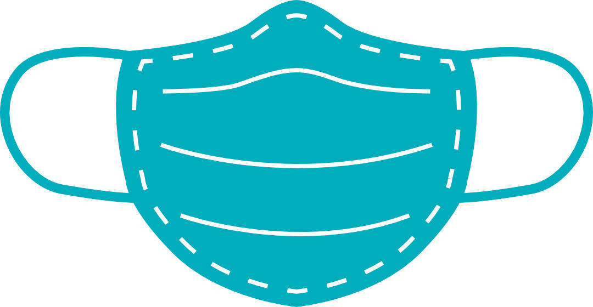
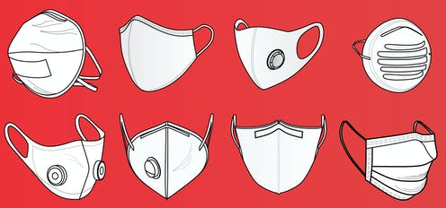

Mask Factory

Contact Information:
Owners: Sarah Landini & Zion Taber
Address: 3220 Market St, Philadelphia, PA 19104
About Us:
Products: Our website allows users to choose the design that best suits them.
Principles: Since the usage of masks has been on a steep incline this past year, a market for masks that are not purely utilitarian has emerged. Our organization strives to produce products that keep our customers safe and healthy while also giving them the opportunity to put their personality on display.

We produce products that keep our customers safe, healthy, and stylish.
To read more about the benefits of masks click here.
Citations